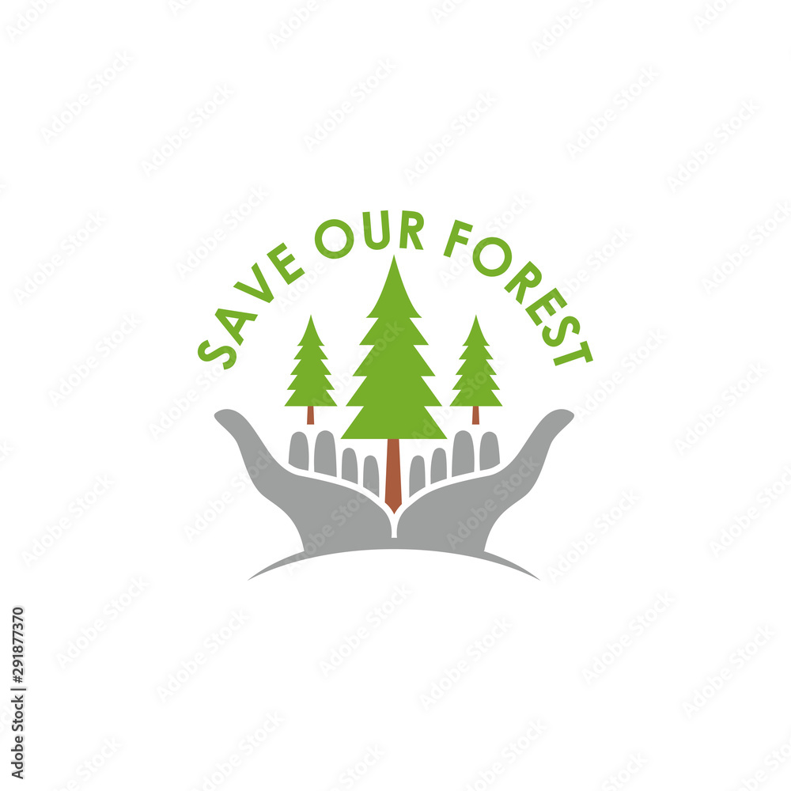

Home
About
What we do
Resources
Contact
Resources for Environmental Conservation
Your guide to protecting our planet
Understanding Environmental Conservation
Definition:
Protecting and preserving the environment for current and future generations.
Focus Areas:
Climate change, deforestation, water pollution, soil erosion, biodiversity, marine ecosystems.
Promoting Conservation
Reduce, Reuse, Recycle:
EPA Recycling Guide
Use Renewable Energy:
Department of Energy
Conserve Water:
Water.org
Support Sustainable Agriculture:
Organic Consumers Association
Get Involved:
Volunteer Opportunities
Key Challenges & Solutions
Climate Change
Transition to renewable energy:
Solar Resources
Energy efficiency:
Energy Star
Carbon capture:
IEA Technology
Biodiversity & Ecosystems
Sustainable agriculture:
Regenerative Agriculture
Wastewater treatment:
EPA Water Programs
Community conservation:
The Nature Conservancy
Pollution & Deforestation
Waste management:
Waste Management Resources
Reforestation:
One Tree Planted
Water & Soil Preservation
Water-saving tips:
EPA WaterSense
Soil erosion control:
NRC Soil Resources
Community Action & Future Plans
Reduce energy use:
NASA Climate
Public transport:
Transit App
Organize clean-ups:
Keep America Beautiful
Urban gardens:
American Community Gardening
Sustainable forestry:
FAO Forest Resources
Show More Resources
Get Involved & Support
Volunteer Opportunities
Support WWF
Support Greenpeace
For more info or local assistance, contact us!